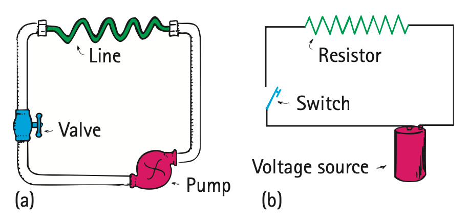

Electrical Resistance
We know that a battery or generator of some kind is the prime mover and source of voltage in an electric circuit. How much current exists depends not only on the voltage but also on the electrical resistance the conductor offers to the flow of charge. This is similar to the rate of water flow in a pipe, which depends not only on the pressure difference between the ends of the pipe but also on the resistance offered by the pipe itself. A short pipe offers less resistance to water flow than a long pipe; the wider the pipe, the less the resistance. Likewise for the resistance of wires that carry current. The resistance of a wire depends both on the thickness and length of the wire and on its particular conductivity. Thick wires have less resistance than thin wires. Longer wires have more resistance than short wires. Copper wire has less resistance than steel wire of the same size. Electrical resistance also depends on temperature. The greater the jostling about of atoms within the conductor, the greater resistance the conductor offers to the flow of charge. For most conductors, increased temperature means increased resistance.4 The resistance of some materials reaches zero at very low temperatures. These are the superconductors discussed briefly in Chapter 22.


Electrical resistance is measured in units called ohms. The Greek letter omega, Ω, is commonly used as the symbol for the ohm. As mentioned at the beginning of this chapter, this unit is named after Georg Simon Ohm, who, in 1826, discovered a simple and very important relationship among voltage, current, and resistance.